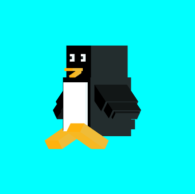
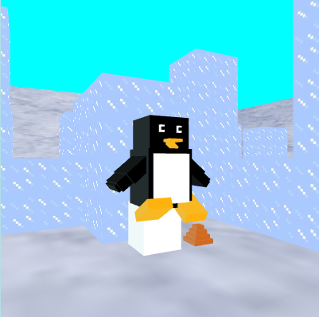
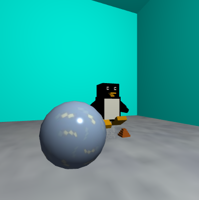

For my web application course, we were tasked to create a project of our choice.
My group and I were not sure of what to do, but we all watch anime of different degrees, and so we made
a simplified version of MyAnimeList as a meme (but now its real and functional).
Source code is available here but API credentials may be hidden
For my software engineering course, groups were tasked to make a project of their choice that would help solve a real world problem. So our group decided to tackle the issue of carbon emissions via food and transportation. We made a calculator that calculated the carbon dioxide emitted from a number of recipes, which could then be saved to user profiles to share with other users.
Source code is available here but API credentials may be hidden
For the theme of Christmas, I wanted to create a cute little backdrop. I used the three.js library to
create
fog graphics and simple to use controls that are easy for the user to shift camera angles.
Source code can be
found here
For a computer graphics class, I created a penguin purely off of cubes, which would then be used to build a new world that revolved around said penguin. The different steps are shown in the following images, which you can click to view their respective source code.
Step 1: Create Penguin
Step 2: Create World for Penguin
Step 3: Create Lighting for World
